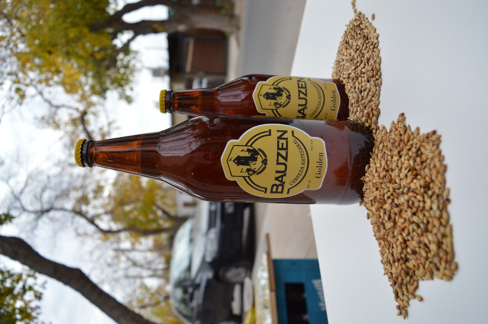

Productos

Scottish
La cerveza roja es caractiristica por sus tonalidades oscuras gracias a maltas caramelo y chocolate. No solo aportando apariencia sino un sabor distinguido.

IPA
La cerveza IPA es caracteristica por su armargor fuerte donde se evidencia las grandes cantidades de lupulo extra para aumentar su IBU y gracias a la tecnica dry hoppyn podemos oler y saborear tintes citricos.

Golden
La cerverza golden es caracteristica por sus tonalidades rubias, aportando el amargor justo de una cerveza ligera.